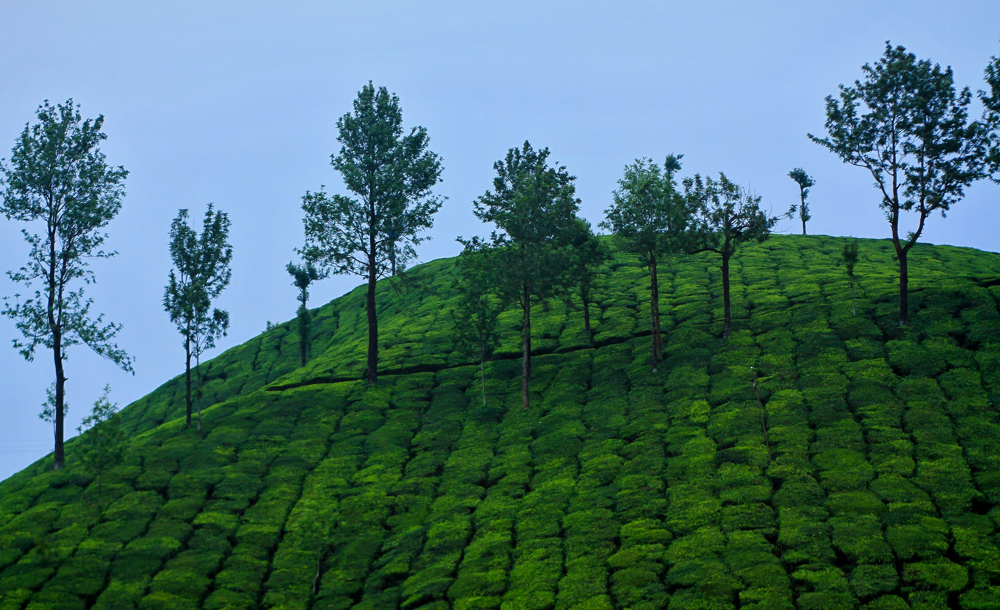

The backwaters have become the front cover of Kerala Tourism. These lagoon range around more than 900kms long connecting many lakes, rivers and estuaries; they contribute the most to the’ Kerala Experience’ expectancy, being the only of its kind in the country.
Beaches
Covered by the Arabian Sea on the west, there are many finely carved beaches to spend time at.And the best part of being at a beach is the view of sunset.

Hills, Wildlife, and Waterfalls!
The Eastern side is shielded by the Western Ghats and as a result, breathtaking hills, mountains and valleys laced with entrancing waterfalls and creeks.
About Kerala
The god’s own country is one of the major tourist attraction as well as the best honeymoon destination in India. The land of God, Kerala is believed to be a gift of the Arabian Sea. The pride of Kerala are Gorgeous and Exotic Beaches, Breathtaking hill Stations, Enchanting waterfalls, Beautiful lagoons, Meandering rivers and Amazing natural scenarios. These colors are made Kerala as a land of beauty and paradise on earth. Kerala is also famous for its Ayurvedic treatments, high mountains, gorges and deep-cut valley, lush and evergreen rain forest and coconuts water and oil and foods items. Kerala houseboats are first and best preference of the tourist to enjoy their moments in beautiful lakes of Kerala. The Idukki dam is the first Indian arch dam in Periyar river Kerala and the largest arch dam in Asia. Shopping, museums and markets are also best way to explore Kerala. Follow to visit some of the Best Place in Kerala.